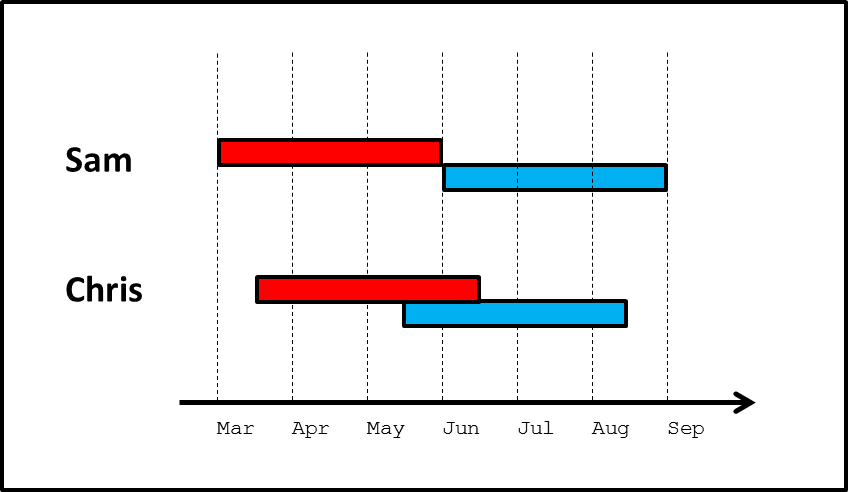
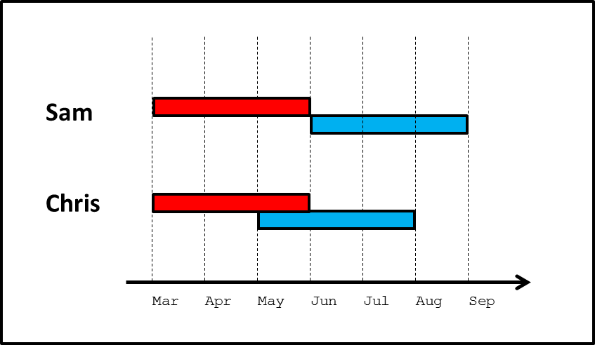
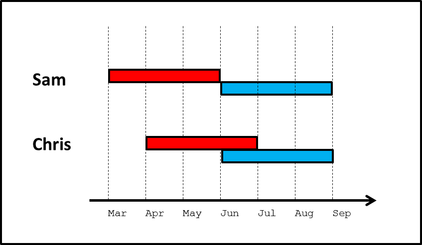
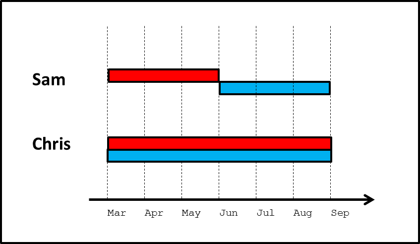

Exercise 1: The local level, conceptually
Introduction
In this exercise, we will focus on two people. Let’s call them Sam and Chris. Each of them had two sex partners in the last six months. And each of those partnerships lasted for three months. All four partnerships had the same number and type of unprotected sex acts in them. The only difference is that Sam’s partners were sequential, while Chris’s partners were concurrent for one month. (Notice the simple mnemonic: sequential Sam, concurrent Chris) During the entire six month period, nobody involved had any other partners.
We can picture this scenario, with each person’s first partner colored red and second partner blue, as follows:

Notice all of the components that we have kept identical between the two cases: Sam and Chris each have the same number of new partners during the six-month period; they each have the same number of sex acts with each partner; their relationships each last the same length; and their sex occurs on average no earlier or later than each other (that is, both have their sex acts evenly centered around the beginning of June).
Questions & Answers
Now, think about each of the following questions. For each question, decide on one of four answers: Sam is more likely; Chris is more likely; Both are equally likely; or perhaps Not Enough Information.
Scenario 1: The blue partners are each infected with the same STI, while Sam, Chris and the red partners are uninfected.
Question 1. Who is more likely to get infected—Sam or Chris?
Question 2. If Sam and Chris do get infected, who is more likely to transmit to their red partner?
Question 3. If Sam and Chris do get infected, who is likely to do so sooner?
Scenario 2: The red partners are each infected with the same STI, while Sam, Chris and the blue partners are uninfected.
Question 1. Who is more likely to get infected—Sam or Chris?
Question 2. If Sam and Chris do get infected, who is more likely to transmit to their blue partner?
Question 3. If Sam and Chris do get infected, who is likely to do so sooner?
Question 4. If Sam and Chris do infect their blue partner, who is likely to do so sooner in time? Sooner after getting infected themselves?
Scenario 1: The blue partners are each infected with the same STI, while Sam, Chris and the red partners are uninfected.
Question 1: Who is more likely to get infected—Sam or Chris? Both are equally likely. Sam and Chris can each be infected by their blue partner only. And they each have the same amount and type of exposure (sex acts) with them.
Question 2: If Sam and Chris do get infected, who is more likely to transmit to their red partner? Chris. In fact, Sam has zero probability of transmitting to the red partner. Chris is capable of doing so; we don’t know the exact probability, but it is presumably greater than 0. Let us call this phenomenon “backwards transmission.” The word “backwards” refers to the fact that because Chris has concurrent partners, an infection can be transmitted from the second partner Chris acquired (blue) back to the first partner Chris acquired (red).
Question 3: If Sam and Chris do get infected, who is likely to do so sooner? Chris. Chris’s window of exposure to the blue partner occurs earlier than Sam’s, even though overall (across both partners) Chris does not have sex any earlier than Sam does on average. We will call this effect “accelerated acquisition.”
Scenario 2: The red partners are each infected with the same STI, while Sam, Chris and the blue partners are uninfected.
Question 1: Who is more likely to get infected—Sam or Chris? Both are equally likely. Sam and Chris can each be infected by their red partner only. And they each have the same amount and type of exposure (sex acts) with them.
Question 2: If Sam and Chris do get infected, who is more likely to transmit to their blue partner? Not enough information. This one is the most tricky; the answer depends on a number of pieces, including the overall level of transmissibility of the infection in question; whether or not that level varies over time; and the frequency of sex acts within each relationship. Clearly, both Sam and Chris are capable of infecting their blue partner. Beyond that, there are two different possible effects that work in opposite directions:
Favoring transmission by Chris: Some STIs can be cleared by the body naturally, or as result of treatment. Examples include gonorrhea and chlamydia. Other STIs, like HIV, cannot be cured, but have a short period early in infection during which an individual is highly infectious to others. For HIV, this period lasts perhaps 2-3 months, and an individual may be 10 to 40 times more infectious than they are subsequently. (See Hollingsworth et al. 2008, Abu Raddad and Longini 2008, and Pinkerton 2008 for these estimates). In these contexts, Chris may be more likely to infect the blue partner than Sam is, since Chris is more likely to be having sex with the blue partner during the time shortly after being infected by red, while still infected (for curable STIs) or highly infectious (for HIV). For example, if Sam and Chris are each infected by their red partner at the beginning of those partnerships, three months will pass before Sam has sex with blue for the first time, but only two months will pass for Chris. If they are each infected one month into their relationships with red, then two months will pass for Sam before initiating sex with blue, and only one month for Chris. And so on. In each case, Sam is more likely to have been cured of the disease, or to have moved out of the period of high infectiousness before being with blue. Let us call this effect “acute infectivity”. We will use the term to refer to all cases in which infectiousness goes down with time, whether to 0 or to some positive value, and whether through cure or through treatment or through the natural history of the infection. Note that the likelihood of Sam and Chris getting infected early or late in their relationship with the red partner—which determines the importance of the acute infectivity effect—is a function of overall infectiousness per act and number of acts per relationship.
Favoring transmission by Sam: If Chris is infected towards the tail end of the relationship with red, then some of the sex acts that Chris has with blue may have already happened. Thus, some of Chris’s opportunities to infect blue will be missed, and the probability of transmitting to blue will decline. Sam does not face this; no matter when Sam is infected by red, it is always before the start of any sex acts with blue. We will call this “reduced forward transmission.” Note that, as with acute infectivity, the likelihood of Sam and Chris getting infected early or late in their relationship with the red partner—which determines the importance of the reduced forward transmission effect—is a function of overall infectiousness per act and number of acts per relationship.
So, the answer to this question may be Sam, or it may be Chris, depending on the exact nature of the infectiousness of the STI of interest over time, and the number of sex acts. We will return to this point in detail on the next page, and explore it mathematically in later exercises.
Question 3: If Sam and Chris do get infected, who is likely to do so sooner? Sam. Sam’s window of exposure to the red partner occurs earlier than Chris’s, even though overall (across both partners) Sam does not have sex any earlier than Chris does on average. However, the implications of this depend on the answer to the next question….
Question 4: If Sam and Chris do infect their blue partner, who is likely to do so sooner in time? Sooner after getting infected themselves? Chris, on both counts. For the first half of the question, we simply note that the blue partner’s exposure period to Chris occurs earlier in time than their exposure period to Sam. For the second half of the question, we use the same basic logic as in the description of acute infectivity above (under Scenario 2, Question 2). If Sam and Chris are each infected at the beginning of their relationships with red, the range over which Sam might infect blue is 3-6 months later, but for Chris, it’s 2-5 months later. If Sam and Chris are each infected during their second month with red, the range over which Sam might infect blue is 2-5 months later, but for Chris, it’s 1-4 months later. And so on. Although the logic is roughly the same as for the “acute infectivity” process, the implication here is slightly different. There, we were focused on the fact that Chris would be more likely to be highly infectious when encountering blue than Sam would. But here we see that even in the absence of any mechanism that causes greater infectivity during a short period after infection, with concurrency an STI can “hop” along chains of three people (from person A to B to C) on average more quickly than it could when people are practicing sequentially monogamous relationships of the same length. We will call this phenomenon “path acceleration.” So despite the fact that Sam was probably infected earlier than Chris was (as we saw in the answer to the previous question), the disease ends up moving further along to another member of the population sooner via Chris. This is because sequential monogamy causes the infection to remain “locked” in the partnership between Sam and the red partner until that relationship ends; this does not happen with Chris and the red partner because of concurrency.
Discussion
We have explored an example in which Sam and Chris each have the same number of new partners during the six-month period; they each have the same number of sex acts with each partner; their relationships each last the same length; and their sex acts occur on average no earlier or later than each other’s (that is, both have their sex acts evenly centered around the same time point). Below, and in later exercises, you will have the opportunity to consider other models. But, for now, what do the answers we saw on the previous page tell us about the effects of concurrency in this scenario? A few very important things:
Sam and Chris had the exact same risk of getting infected from their red partner. They also had the exact same risk of getting infected from their blue partner. Thus, Sam and Chris had the exact same risk of getting infected overall.
All else being equal, whether one’s partnerships are sequential or concurrent makes no difference whatsoever to one’s risk of acquiring an STI.
On the other hand, if they do get infected, there are three different processes that affect how likely they are to transmit to someone else. Two of these increase Chris’s probability of transmitting relative to Sam’s, and one increases Sam’s relative to Chris’s. These are:
- The “backwards transmission” effect: increases Chris’s probability of transmitting relative to Sam’s.
- The “acute infectivity” effect: increases Chris’s probability of transmitting relative to Sam’s.
- The “reduced forward transmission” effect: increases Sam’s probability of transmitting relative to Chris’s.
In terms of backwards transmission, the distinction between concurrency and sequential monogamy is absolute: concurrency generates backwards transmission, and sequential monogamy does not.
In terms of forward transmission: there are two different effects, which work in opposite directions, so the picture is less consistent. Since we are only exploring conceptually right now, we cannot be much more precise than this. However, now that we have identified the three effects, we can also provide some foreshadowing to Exercise 3, which explores the same effects more mathematically. In the range of scenarios we consider there, we will see that the effect of backwards transmission always outweighs that of missed forward transmission. That is, when one combines their two effects, Chris is always more likely to transmit than Sam, although the exact difference depends on the details. More generally, the broader literature on concurrency shows that across ranges of realistic diseases and relational dynamics, the collective effect of these various pathways strongly favors transmission by those with concurrent partners over sequential.
All else being equal, whether one’s partnerships are sequential or concurrent has three effects on one’s probability of transmitting an STI. The collective effect of these generally favors transmission by the person with concurrent partners, and sometimes by a very large amount, depending on the level of infectiousness and its change over time.
Both Sam and Chris can acquire from red and transmit to blue. But even here, in Chris’s case the STI is capable of spreading more quickly through this path than in Sam’s case. In Sam’s case, the STI must lose time being “locked” in the monogamous partnership, waiting for it to end and for the next one to begin; the infection does not need to experience the same waiting period with Chris. If the blue partner did have other partners, then the infection would be able to proceed further on through the network more quickly.
Sequential partnerships lead to STIs spending some amount of time being “locked” in a partnership; concurrent partnerships allow it to move along a chain of three people (and then perhaps on from there) more quickly.
In Exercise 1, and in the insights that resulted from it, we were largely focused on the question of concurrency’s effect at the local level, specifically among an individual and two of their (sequential or concurrent) partners. In reality, of course, these three people are embedded in much larger social networks, something we began to hint at with Insight 3. Any of the three may have additional partners, either concurrently or subsequently; those partners will have other partners, and so on. Differences at the local level have the potential to aggregate up to the population level in different ways. So now that we have some insight into how concurrency affects transmission locally, let us consider in Exercise 2 how much this can matter to the population as a whole.
Note that we made some assumptions about Chris’s and Sam’s sexual partnerships at the outset in order to make them as comparable as possible, while allowing one to have concurrency and the other not. But, the approach we took is not the only one possible, nor the only one worth exploring. Those who wish to consider this in more depth may choose to do so in the Follow-Up. Other may wish to proceed to Exercise 2.
Follow-up
In Exercise 1, we set up the example so that Chris and Sam were similar on as many important metrics as possible, while still allowing Chris to have concurrent relationships, and Sam to have sequential relationships. Recall the example:
Items that were held equal across Chris and Sam include:
- Chris and Sam each have the same number of new relationships over the 6-month period
- Chris and Sam each have relationships of the same length
- Chris and Sam each have the same frequency of coital acts with their partners
- Chris and Sam each have sex at the same time on average—both are arranged symmetrically around the beginning of June.
However, some things needed to be different. Obviously, we wanted one to have concurrent partners and the other not, by design. But doing that requires some other aspects to differ as well. In our example, these included:
- Chris began having sex later than Sam
- Chris stopped having sex earlier than Sam
- Chris had time periods with more sex than Sam, and other time periods with no sex at all. On the other hand, Sam had a constant coital frequency across the six months.
Mathematically, one cannot have everything on both lists above match up between Chris and Sam when Chris is having concurrent partners and Sam is not. Something else must differ. We chose the above configuration because we felt that it most matched people’s intuition for a fair comparison that allows one to isolate the effect of concurrency as much as possible. But one might chose other comparisons as well. Below we include three examples that we encourage readers to explore on their own, identifying what is similar and what is different between Sam and Chris, and how each of the questions in Exercise 1 about probabilities and timings of transmission would be answered for that scenario. Readers should also consider defining and exploring scenarios of their own, remembering, of course, to be mindful that all insights derived must be interpreted in light of the similarities and differences between Chris and Sam for that scenario.
Alternate Scenario 1. Sam and Chris initiate sex at the same time, and Chris’s sexual acts occur earlier than Sam’s on average

Alternate Scenario 2. Sam and Chris complete sex at the same time, and Chris’s sexual acts occur later than Sam’s on average

Alternate Scenario 3. Sam and Chris begin and complete sex at the same time; Chris’s relationships are twice as long as Sam’s, but Chris has only half as many coital acts with each partner as Sam does. Thus, overall Chris and Sam have the same total frequency of sex.
This scenario is an example of coital dilution, wherein Chris has only half as many sex acts per unit time within each relationship as Sam does.

Note that across all scenarios, one of the things on which we maintain consistency is the total number of coital acts had by Sam and Chris. Reducing one relative to the other makes it impossible to identify the effect of concurrency itself, since a reduction in sex will in and of itself have a major impact on disease transmission.